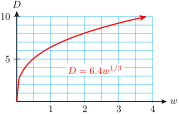
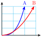
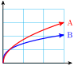
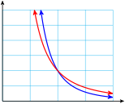
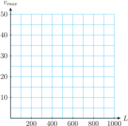
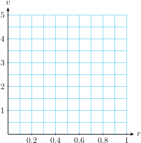

Section 6.2 Roots and Radicals
In the previous section we saw that inverse variation can be expressed as a power function by using negative exponents. We can also use exponents to denote square roots and other radicals.
Subsection \(n^\text{th}\) Roots
Recall that \(s\) is a square root of \(b\) if \(s^2 = b\text{,}\) and \(s\) is a cube root of \(b\) if \(s^3 = b\text{.}\) In a similar way, we can define the fourth, fifth, or sixth root of a number. For instance, the fourth root of \(b\) is a number \(s\) whose fourth power is \(b\text{.}\)
\(n\)th Roots.
\(s\) is called an \(n\)th root of \(b\) if \(\blert{s^n = b}\text{.}\)
We use the symbol \(\sqrt[n]{b}\) to denote the \(n\)th root of \(b\text{.}\) An expression of the form \(\sqrt[n]{b}\) is called a radical, \(b\) is called the radicand, and \(n\) is called the index of the radical.
Example 6.20.
\(\sqrt[4]{81} = 3\) because \(3^4 = 81\)
\(\sqrt[5]{32} = 2\) because \(2^5 = 32\)
\(\sqrt[6]{64} = 2\) because \(2^6 = 64\)
\(\sqrt[4]{1} = 1\) because \(1^4 = 1\)
\(\sqrt[5]{100,000} = 10\) because \(10^5 = 100,000\)
Checkpoint 6.21. Practice 1.
Subsection Exponential Notation for Radicals
A convenient notation for radicals uses fractional exponents. Consider the expression \(9^{1/2}\text{.}\) What meaning can we attach to an exponent that is a fraction? The third law of exponents says that when we raise a power to a power, we multiply the exponents together:
Therefore, if we square the number \(9^{1/2}\text{,}\) we get
Thus, \(9^{1/2}\) is a number whose square is \(9\text{.}\) But this means that \(9^{1/2}\) is a square root of \(9\text{,}\) or
Checkpoint 6.22. QuickCheck 1.
Fill in the blanks.
Inverse variation can be expressed as a power function by using a
power
negative
reciprocal
inverse
The number \(n\) in the expression \(\sqrt[n]{b}\) is called the
root
exponent
radicand
index
We use
fractional
negative
reciprocal
inverse
-
State the law of exponents that shows that \(a^{1/2}\) is a square root of \(a\text{.}\)
\(\displaystyle a^m\cdot a^n=a^{m+n} \)
\(\displaystyle \frac{a^m}{a^n}=a^{m-n} \)
\(\displaystyle \left(a^m\right)^n=a^{mn} \)
\(\displaystyle (ab)^n=a^n b^n \)
\(\displaystyle \left(\frac{a}{b}\right)^n=\frac{a^n}{b^n} \)
In general, any nonnegative number raised to the \(1/2\) power is equal to the positive square root of the number, or
Example 6.23.
\(\displaystyle 25^{1/2} = 5\)
\(\displaystyle -25^{1/2} = -5\)
\((-25)^{1/2}\) is not a real number.
\(\displaystyle 0^{1/2} = 0\)
Checkpoint 6.24. Practice 2.
Evaluate each power.
\(4^{1/2}=\)
\(4^{-2}=\)
\(4^{-1/2}=\)
\(\left(\dfrac{1}{4}\right)^{1/2}=\)
The same reasoning works for roots with any index. For instance, \(8^{1/3}\) is the cube root of \(8\text{,}\) because
Thus, we make the following definition for fractional exponents.
Exponential Notation for Radicals.
For any integer \(n \ge 2\) and for \(a \ge 0\text{,}\)
Example 6.25.
\(\displaystyle 81^{1/4} = \sqrt[4]{81} = 3\)
\(\displaystyle 125^{1/3} = \sqrt[3]{125} = 5\)
Caution 6.26.
Note that
An exponent of \(\dfrac{1}{2}\) denotes the square root of its base, and an exponent of \(\dfrac{1}{3}\) denotes the cube root of its base.
Checkpoint 6.27. Practice 3.
Write each power with radical notation, and then evaluate.
-
\(32^{1/5}\) is
\(\displaystyle \sqrt{32/5}\)
\(\displaystyle \sqrt[5]{32}\)
\(\displaystyle \sqrt{32^5}\)
\(32^{1/5}=\)
-
\(625^{1/4}\) is
\(\displaystyle \sqrt{625/4}\)
\(\displaystyle \sqrt{625^4}\)
\(\displaystyle \sqrt[4]{625}\)
\(625^{1/4}=\)
Of course, we can use decimal fractions for exponents as well. For example,
Example 6.28.
\(\displaystyle 100^{0.5} = \sqrt{100} = 10\)
\(\displaystyle 16^{0.25} = \sqrt[4]{16} = 2\)
Checkpoint 6.29. Practice 4.
Write each power with radical notation, and then evaluate.
-
\(100,000^{0.2}\) is
\(\displaystyle \sqrt[2]{100,000}\)
\(\displaystyle \sqrt[5]{100,000}\)
\(\displaystyle \sqrt{100,000\cdot 5}\)
\(100,000^{0.2}=\)
-
\(81^{0.25}\) is
\(\displaystyle \sqrt{81/4}\)
\(\displaystyle \sqrt[4]{81}\)
\(\displaystyle \sqrt[25]{81}\)
\(81^{0.25}=\)
Checkpoint 6.30. QuickCheck 2.
True or false.
The exponent \(\dfrac{1}{n}\) tells us to take a reciprocal.
True
False
The exponent 0.2 denotes a fifth root.
True
False
A power with a negative exponent is not a real number.
True
False
The expressions \(x^{-3}\) and \(x^{1/3}\) are the same.
True
False
Subsection Irrational Numbers
What about \(n\)th roots such as \(\sqrt{23}\) and \(5^{1/3}\) that cannot be evaluated easily? These are examples of irrational numbers. An irrational number is one that cannot be expressed as a quotient of two integers.
It is not possible to write down an exact decimal equivalent for an irrational number, but we can find an approximation to as many decimal places as we like. We can use a calculator to obtain decimal approximations for irrational numbers. For example, you can verify that
Caution 6.31.
The following keying sequence for evaluating the irrational number \(7^{1/5}\) is incorrect:
7 ^ 1 ÷ 5 ENTER
You can check that this sequence calculates \(\dfrac{7^1}{5}\text{,}\) instead of \(7^{1/5}\text{.}\) Recall that according to the order of operations, powers are computed before multiplications or divisions. We must enclose the exponent \(1/5\) in parentheses and enter
7 ^ ( 1 ÷ 5 ) ENTER
Or, because \(\dfrac{1}{5}= 0.2\text{,}\) we can enter
7 ^ 0.2 ENTER
Subsection Working with Fractional Exponents
Fractional exponents simplify many calculations involving radicals. You should learn to convert easily between exponential and radical notation.
Example 6.32.
Convert each radical to exponential notation.
\(\displaystyle \sqrt[3]{12} = 12^{1/3}\)
\(\displaystyle \sqrt[4]{2y} = (2y)^{1/4} \text{ or } (2y)^{0.25}\)
Caution 6.33.
In part (b) of the Example above, the parentheses around \((2y)\) must not be omitted. The expression \(2y^{1/4}\) means \(2 \sqrt[4]{y}\text{.}\)
Remember that a negative exponent denotes a reciprocal.
Checkpoint 6.34. Practice 5.
Example 6.35.
Convert each power to radical notation.
\(\displaystyle 5^{1/2} = \sqrt{5}\)
\(\displaystyle x^{0.2} = \sqrt[5]{x}\)
\(\displaystyle 2x^{1/3} = 2 \sqrt[3]{x}\)
\(\displaystyle 8a^{-1/4} = \dfrac{8}{\sqrt[4]{a}}\)
Note 6.36.
In Example 6.35d, note that the exponent \(-1/4\) applies only to \(a\text{,}\) not to \(8a\text{.}\) Compare with \((8a)^{-1/4} = \dfrac{1}{\sqrt[4]{8a}}\)
Checkpoint 6.37. Practice 6.
-
Convert \(\dfrac{3}{\sqrt[4]{2x} }\) to exponential notation.
\(\displaystyle \dfrac{3}{2x^{1/4}} \)
\(\displaystyle 3 (2x)^{-1/4} \)
\(\displaystyle \dfrac{3}{2}x^{-1/4} \)
-
Convert \(-5b^{0.125}\) to radical notation.
\(\displaystyle \sqrt[8]{-5b}\)
\(\displaystyle -\sqrt[5]{b^8}\)
\(\displaystyle -5\sqrt[8]{b}\)
Checkpoint 6.38. QuickCheck 3.
True or false.
All expressions of the form \(x^{1/n}\) represent irrational numbers.
True
False
When we enter an exponent \(1/n\) into a calculator, we must enclose it in parentheses.
True
False
In the expression \(16x^{1/4}\text{,}\) the exponent does not apply to 16.
True
False
You can use your calculator to find a decimal equivalent for an irrational number.
True
False
Subsection Using Fractional Exponents to Solve Equations
We know that raising to powers and taking roots are inverse operations, that is, each operation undoes the effects of the other. This relationship is especially easy to see when the root is denoted by a fractional exponent. For example, to solve the equation
we would take the fifth root of each side. But instead of using radical notation, we can raise both sides of the equation to the power \(\dfrac{1}{5}\text{:}\)
The third law of exponents tells us that \(\left(x^a\right)^b = x^{ab}\text{,}\) so
Thus, to solve an equation involving a power function \(x^n\text{,}\) we first isolate the power, then raise both sides to the exponent \(\dfrac{1}{n}\text{.}\)
Example 6.39.
For astronomers, the mass of a star is its most important property, but it is also the most difficult to measure directly. For many stars, their luminosity, or brightness, varies roughly as the fourth power of the mass.
Our Sun has luminosity \(4 \times 10^{26}\) watts and mass \(2 \times 10^{30}\) kilograms. Because the numbers involved are so large, astronomers often use these solar constants as units of measure: The luminosity of the Sun is \(1\) solar luminosity, and its mass is \(1\) solar mass. Write a power function for the luminosity, \(L\text{,}\) of a star in terms of its mass, \(M\text{,}\) using units of solar mass and solar luminosity.
The star Sirius is 23 times brighter than the Sun, so its luminosity is 23 solar luminosities. Estimate the mass of Sirius in units of solar mass.
Because \(L\) varies as the fourth power of \(M\text{,}\) we have
\begin{equation*} L = kM^4 \end{equation*}Substituting the values of \(L\) and \(M\) for the Sun (namely, \(L = 1\) and \(M = 1\)), we find\begin{equation*} 1 = k(1)^4 \end{equation*}so \(k = 1\) and \(L = M^4\text{.}\)We substitute the luminosity of Sirius, \(L = 23\text{,}\) to get
\begin{equation*} 23 = M^4 \end{equation*}To solve the equation for \(M\text{,}\) we raise both sides to the \(\dfrac{1}{4}\) power.\begin{align*} (23)^{1/4} \amp = \left(M^4\right)^{1/4}\\ 2.1899 \amp = M \end{align*}The mass of Sirius is about 2.2 solar masses, or about 2.2 times the mass of the Sun.
Checkpoint 6.40. QuickCheck 4.
-
How do we solve the equation \(x^8=32\text{?}\)
Divide both sides of the equation by 8.
Add \(-8\) to each side of the equation.
Multiply both sides by \(\frac{1}{8} \text{.}\)
Raise each side of the equation to the power \(\frac{1}{8}\text{.}\)
-
Which law of exponents justifies this strategy?
\(\displaystyle a^m\cdot a^n=a^{m+n} \)
\(\displaystyle \frac{a^m}{a^n}=a^{m-n} \)
\(\displaystyle \left(a^m\right)^n=a^{mn} \)
\(\displaystyle (ab)^n=a^n b^n \)
\(\displaystyle \left(\frac{a}{b}\right)^n=\frac{a^n}{b^n} \)
Subsection Power Functions
The size of a diamond is usually given by its weight \(w\) in carats. The diameter, \(D\text{,}\) of a diamond cut in a traditional round style is then a power function of its weight, given by
Example 6.41.
A diamond weighing one-quarter carat has diameter about 4.05 millimeters. Find the constant of proportionality, \(k\text{,}\) and write a formula for \(D\) as a function of \(w\text{.}\)
-
Complete the table with the diameters of diamonds of various weights.
\(w~\) (carats) \(0\) \(0.5\) \(0.75\) \(1.0\) \(1.25\) \(1.5\) \(2.0\) \(2.5\) \(3.0\) \(D~\) (mm) \(~~~\) \(~~~\) \(~~~\) \(~~~\) \(~~~\) \(~~~\) \(~~~\) \(~~~\) \(~~~\) Sketch a graph of the function \(D=f(w)\text{.}\)
What is the diameter of the Hope Diamond, which weighs 45.52 carats and is worth $300 million?
We substitute \(w=\alert{0.25}\) and \(D=\alert{4.05}\) into the equation and solve for \(k\text{.}\)
\begin{align*} \alert{4.05} \amp = k(\alert{0.25})^{1/3}\\ k \amp = \dfrac{4.05}{0.25^{1/3}} = 6.429 \end{align*}Rounded to tenths, \(k=6.4\text{,}\) and \(D=6.4w^{1/3}\text{.}\)-
We evaluate the function for each of the weights given in the table. The diameters are rounded to tenths of a millimeter.
\(w~\) (carats) \(0\) \(0.5\) \(0.75\) \(1.0\) \(1.25\) \(1.5\) \(2.0\) \(2.5\) \(3.0\) \(D~\) (mm) \(0\) \(5.1\) \(5.8\) \(6.4\) \(6.9\) \(7.3\) \(8.1\) \(8.7\) \(9.2\) -
We plot the points from the table and draw a smooth curve to obtain the graph shown.
 -
We evaluate the function for \(w=45.52\) to obtain
\begin{equation*} D=6.4(45.52)^{1/3} = 22.85 \end{equation*}According to our formula, the Hope Diamond is about 22.85 millimeters in diameter.
Of course, power functions can be expressed using any of the notations we have discussed. For example, the function in the Example above can be written as
Checkpoint 6.42. Practice 8.
-
Complete the table of values for the power function \(f (x) = x^{-1/2}\text{.}\)
\(x\) \(0.1\) \(0.25\) \(0.5\) \(1\) \(2\) \(f(x)\) \(x\) \(4\) \(8\) \(10\) \(20\) \(200\) \(f(x)\) Sketch the graph of \(y = f(x)\text{.}\)
-
Write the formula for \(f(x)\) with a decimal exponent, and with radical notation.
\(f(x)\) is
\(\displaystyle x^{-2} \)
\(\displaystyle x^{0.5} \)
\(\displaystyle x^{-0.5} \)
and also, \(f(x)\) is
\(\displaystyle \dfrac{1}{\sqrt{x}} \)
\(\displaystyle -\sqrt{x/2}\)
\(\displaystyle \dfrac{-\sqrt{x}}{2}\)
\(3.16228\)
\(2\)
\(1.41421\)
\(1\)
\(0.707107\)
\(0.5\)
\(0.353553\)
\(0.316228\)
\(0.223607\)
\(0.0707107\)
\(\text{Choice 3}\)
\(\text{Choice 1}\)
\(x\) \(0.1\) \(0.25\) \(0.5\) \(1\) \(2\) \(f(x)\) \(3.2\) \(2\) \(1.4\) \(1\) \(0.71\)
| \(x\) | \(4\) | \(8\) | \(10\) | \(20\) | \(200\) |
| \(f(x)\) | \(0.5\) | \(0.35\) | \(0.32\) | \(0.22\) | \(0.1\) |
A graph is below.
\(f (x) = x^{-0.5}\text{,}\) \(f(x)=\dfrac{1}{\sqrt{x}}\)

Subsection Solving Radical Equations
A radical equation is one in which the variable appears under a square root or other radical. The radical may be denoted by a fractional exponent. For example, the equation
is a radical equation because \(x^{1/3} = \sqrt[3]{x}\text{.}\) To solve the equation, we first isolate the power to get
Then we raise both sides of the equation to the reciprocal of \(\dfrac{1}{3}\text{,}\) or \(3\text{.}\)
Example 6.43.
When a car brakes suddenly, its speed can be estimated from the length of the skid marks it leaves on the pavement. A formula for the car’s speed, in miles per hour, is
where the length of the skid marks, \(d\text{,}\) is given in feet.
If a car leaves skid marks 80 feet long, how fast was the car traveling when the driver applied the brakes?
How far will a car skid if its driver applies the brakes while traveling 80 miles per hour?
-
To find the velocity of the car, we evaluate the function for \(d = \alert{80}\text{.}\)
\begin{align*} v\amp= (24 \cdot \alert{80})^{1/2}\\ \amp = (1920)^{1/2} \approx 43.8178046 \end{align*}The car was traveling at approximately 44 miles per hour.
-
We would like to find the value of \(d\) when the value of \(v\) is known. We substitute \(v = \alert{80}\) into the formula and solve the equation
\begin{equation*} \alert{80} = (24d)^{1/2} ~~ \blert{\text{ Solve for }d.} \end{equation*}Because \(d\) appears to the power \(\frac{1}{2}\text{,}\) we first square both sides of the equation to get
\begin{align*} 80^2 \amp = \left((24d)^{1/2}\right)^2 \amp\amp \blert{\text{Square both sides.}}\\ 6400 \amp = 24d \amp\amp \blert{\text{Divide by }24.}\\ 266.\overline{6} \amp = d \end{align*}You can check that this value for \(d\) works in the original equation. Thus, the car will skid approximately 267 feet. A graph of the function \(v = (24d)^{1/2}\) is shown below, along with the points corresponding to the values in parts (a) and (b).

Note 6.44.
Thus, we can solve an equation where one side is an \(n\)th root of \(x\) by raising both sides of the equation to the \(n\)th power. We must be careful when raising both sides of an equation to an even power, since extraneous solutions may be introduced. However, because most applications of power functions deal with positive numbers only, they do not usually involve extraneous solutions.
Checkpoint 6.45. QuickCheck 5.
-
How do we solve the equation \(~x^{1/6} = 12\text{?}\)
Raise each side to the power 6.
Raise each side to the power \(\frac{1}{6}\text{.}\)
Multiply both sides by 6.
Multiply both sides by \(\frac{1}{6} \text{.}\)
-
How do we solve the equation \(~\sqrt[6]{x} = 12\text{?}\)
Raise each side to the power 6.
Raise each side to the power \(\frac{1}{6}\text{.}\)
Multiply both sides by 6.
Multiply both sides by \(\frac{1}{6} \text{.}\)
-
How do we solve the equation \(~x^6 = 12\text{?}\)
Raise each side to the power 6.
Raise each side to the power \(\frac{1}{6}\text{.}\)
Multiply both sides by 6.
Multiply both sides by \(\frac{1}{6} \text{.}\)
-
How do we evaluate the function \(~f(x)=x^{1/6}\) for \(x=12\text{?}\)
Raise 12 to the power 6.
Raise 12 the power \(\frac{1}{6}\text{.}\)
Multiply 12 by 6.
Multiply 12 by \(\frac{1}{6} \text{.}\)
\(\text{Choice 1}\)
\(\text{Choice 1}\)
\(\text{Choice 2}\)
\(\text{Choice 2}\)
Raise each side to the power \(6\text{.}\)
Raise each side to the power \(6\text{.}\)
Raise each side to the power \(\dfrac{1}{6}\text{.}\)
Raise 12 to the power \(\dfrac{1}{6}\text{.}\)
Checkpoint 6.46. Practice 9.
Subsection Roots of Negative Numbers
You already know that \(\sqrt{-9}\) is not a real number, because there is no real number whose square is \(-9\text{.}\) Similarly, \(\sqrt[4]{-16}\) is not a real number, because there is no real number \(r\) for which \(r^4 = -16\text{.}\) (Both of these radicals represent complex numbers.) In general, we cannot find an even root (square root, fourth root, and so on) of a negative number.
On the other hand, every positive number has two even roots that are real numbers. For example, both \(3\) and \(-3\) are square roots of \(9\text{.}\) The symbol \(\sqrt{9}\) refers only to the positive, or principal root, of \(9\text{.}\) If we want to refer to the negative square root of \(9\text{,}\) we must write \(-\sqrt{9} = -3\text{.}\) Similarly, both \(2\) and \(-2\) are fourth roots of \(16\text{,}\) because \(2^4 = 16\) and \((-2)^4 = 16\text{.}\) However, the symbol \(\sqrt[4]{16}\) refers to the principal, or positive, fourth root only. Thus,
Things are simpler for odd roots (cube roots, fifth roots, and so on). Every real number, whether positive, negative, or zero, has exactly one real-valued odd root. For example,
Here is a summary of our discussion.
Roots of Real Numbers.
Every positive number has two real-valued roots, one positive and one negative, if the index is even.
A negative number has no real-valued root if the index is even.
Every real number, positive, negative, or zero, has exactly one real-valued root if the index is odd.
Example 6.47.
\(\sqrt[4]{-625}\) is not a real number.
\(\displaystyle - \sqrt[4]{625} = -5\)
\(\displaystyle \sqrt[5]{-1} = -1\)
\(\sqrt[4]{-1}\) is not a real number.
The same principles apply to powers with fractional exponents. Thus
but \((-64)^{1/6}\) is not a real number. On the other hand,
because the exponent \(1/6\) applies only to \(64\text{,}\) and the negative sign is applied after the root is computed.
Checkpoint 6.48. QuickCheck 6.
Fill in the blanks.
We cannot take an
even
odd
cube
positive
negative
The principal root is the
positive
negative
An odd root of a negative number is
positive
negative
An \(n^{th}\) root is the same as the
nth
1/n
Checkpoint 6.49. Practice 10.
Evaluate each power, if possible. Enter “DNE” if it is not possible to evaluate.
\(-81^{1/4}=\)
\((-81)^{1/4}=\)
\(-64^{1/3}=\)
\((-64)^{1/3}=\)
Exercises Problem Set 6.2
Skills Warm Up
1.
Each radical below is equal to an integer. Use trial and error to find the root without a calculator.
\(\displaystyle \sqrt{169}\)
\(\displaystyle \sqrt[3]{64}\)
\(\displaystyle \sqrt[4]{81}\)
\(\displaystyle \sqrt[5]{100,000}\)
\(\displaystyle \sqrt[4]{1296}\)
\(\displaystyle \sqrt[3]{343}\)
2.
Evaluate each power without using a calculator.
\(\displaystyle 9^{1/2}\)
\(\displaystyle 81^{1/4}\)
\(\displaystyle 64^{1/6}\)
\(\displaystyle 32^{0.2}\)
\(\displaystyle 8^{-1/3}\)
\(\displaystyle 64^{-0.5}\)
3.
Use a calculator to approximate each irrational number to the nearest thousandth:
\(\displaystyle 2^{1/2}\)
\(\displaystyle \sqrt[3]{75}\)
\(\displaystyle \sqrt[4]{1.6}\)
\(\displaystyle 365{-1/3}\)
\(\displaystyle 0.006^{-0.2}\)
\(\displaystyle 100^{0.25}\)
4.
Use the definition of a root to simplify without using a calculator.
\(\displaystyle (\sqrt[3]{125})^3=\)
\(\displaystyle (\sqrt[4]{2})^4=\)
\(\displaystyle (\sqrt[3]{7})^3=\)
\(\displaystyle \left(2\sqrt[3]{12} \right)^3 \)
\(\displaystyle \left(-a^3\sqrt[4]{a^2} \right)^4 \)
\(\displaystyle (-x^2\sqrt[3]{2x})^3=\)
Skills Practice
5.
Evaluate each power, if possble.
\(\displaystyle -81^{1/4}\)
\(\displaystyle (-81)^{1/4}\)
\(\displaystyle -27^{1/3}\)
\(\displaystyle (-27)^{1/3}\)
6.
Complete the table converting radicals to powers.
| Radical | \(\sqrt{x}\) | \(\sqrt[3]{x}\) | \(\sqrt[4]{x}\) | \(\sqrt[5]{x}\) | \(\dfrac{1}{\sqrt{x}}\) | \(\dfrac{1}{\sqrt[3]{x}}\) | \(\dfrac{1}{\sqrt[4]{x}}\) | \(\dfrac{1}{\sqrt[5]{x}}\) |
| Exponent (Fraction) | \(x^{1/2}\) | \(~~~\) | \(~~~\) | \(~~~\) | \(~~~\) | \(~~~\) | \(~~~\) | \(~~~\) |
| Exponent (Decimal) | \(x^{0.5}\) | \(~~~\) | \(~~~\) | \(~~~\) | \(~~~\) | \(~~~\) | \(~~~\) | \(~~~\) |
Exercise Group.
For Problems 7 and 8, write each expression in radical form.
7.
\(\displaystyle 7^{1/2} \)
\(\displaystyle 3x^{1/4} \)
\(\displaystyle (3x)^{0.25} \)
8.
\(\displaystyle 8^{-1/4} \)
\(\displaystyle y(5x)^{-0.5} \)
\(\displaystyle (y+2)^{1/3} \)
Exercise Group.
For Problems 9 and 10, write each expression in exponential form.
9.
\(\displaystyle \sqrt{5} \)
\(\displaystyle \sqrt[3]{4y} \)
\(\displaystyle 5\sqrt[3]{x} \)
10.
\(\displaystyle \dfrac{2} {\sqrt[5]{3} } \)
\(\displaystyle \sqrt[3]{y+2x} \)
\(\displaystyle \dfrac{-1} {\sqrt[4]{3a-2b} } \)
Exercise Group.
For Problems 11-14, write the expression as a sum of terms of the form \(kx^p\text{.}\)
11.
\(\dfrac{\sqrt{x}}{4}-\dfrac{2}{\sqrt{x}}+\dfrac{x}{\sqrt{2}}\)
12.
\(\dfrac{6-\sqrt[3]{x}}{2\sqrt[3]{x}}\)
13.
\(x^{-0.5}\left(x+x^{0.25}-x^{0.5} \right)\)
14.
\(\dfrac{\dfrac{1}{2}x^{-1}+2x^{-0.5}+x^{-0.25}}{2x^{0.5}}\)
Exercise Group.
For Problems 15-20, solve.
15.
\(6.5x^{1/3} + 3.8 = 33.05\)
16.
\(4(x + 2)^{1/5} = 12\)
17.
\((2x - 3)^{-1/4} = \dfrac{1}{2}\)
18.
\((5x-2)^{-1/3} = \dfrac{1}{4}\)
19.
\(\sqrt[3]{x^2-3} = 3\)
20.
\(\sqrt[3]{2x^2-15} = 5\)
Exercise Group.
For Problems 21-26, solve for the indicated variable.
21.
\(T = 2\pi\sqrt{\dfrac{L}{g}}~~~~\) for \(L\)
22.
\(r = \sqrt{t^2-s^2}~~~~\) for \(s\)
23.
\(d = \sqrt[3] {\dfrac{16Mr^2}{m}}~~~~\) for \(M\)
24.
\(R = \sqrt[4] {\dfrac{8Lvf}{\pi p}}~~~~\) for \(p\)
25.
\(T = \sqrt[4] {\dfrac{E}{SA}}~~~~\) for \(A\)
26.
\(r = \sqrt[3] {\dfrac{3V}{4 \pi}}~~~~\) for \(V\)
27.
Match each function with the description of its graph in the first quadrant.
\(\displaystyle f(x)=x^2\)
\(\displaystyle g(x)=x^{-2}\)
\(\displaystyle h(x)=x^{1/2}\)
\(\displaystyle f (x) = x^{-1/2}\)
Increasing and concave up
Increasing and concave down
Decreasing and concave up
Decreasing and concave down
28.
Match each function with its graph.
- 
\(f(x)=x^2,~g(x)=x^3\)
- 
\(f(x)=x^{1/2},~g(x)=x^{1/3}\)
- 
\(f(x)=x^{-2},~g(x)=x^{-3}\)
29.
Write each expression as a power function.
\(\displaystyle G(x)=3.7 \sqrt[3]{x} \)
\(\displaystyle H(x)=\sqrt[4]{85x} \)
\(\displaystyle F(t)=\dfrac{25}{\sqrt[5]{t}} \)
30.
Graph each set of functions in the given window. What do you observe?
-
\(y_1=\sqrt{x},~y_2=x^2,~y_3=x\)
\begin{align*} \text{Xmin} \amp = 0 \amp\amp \text{Xmax} = 4\\ \text{Ymin} \amp = 0 \amp\amp \text{Ymax} = 4 \end{align*} -
\(y_1=\sqrt[3]{x},~y_2=x^3,~y_3=x\)
\begin{align*} \text{Xmin} \amp = -4 \amp\amp \text{Xmax} = 4\\ \text{Ymin} \amp = -4 \amp\amp \text{Ymax} = 4 \end{align*}
Applications
31.
When a ship moves through the water, it creates waves that impede its own progress. Because of this resistance, there is an upper limit to the speed at which a ship can travel, given in knots by
where \(L\) is the length of the vessel in feet. (Source: Gilner, 1972)
-
Complete the table of values for \(v_{\text{max}}\) as a function of \(L\text{.}\)
\(L\) (feet) \(200\) \(400\) \(600\) \(800\) \(1000\) \(v_{\text{max}}\) (knots) \(\) \(\) \(\) \(\) \(\) -
Graph maximum speed against vessel length.
 The world’s largest ship, the oil tanker Jahre Viking, is 1054 feet long. What is its top speed?
As a ship approaches its maximum speed, the power required increases sharply. Therefore, most merchant ships are designed to cruise at speeds no higher than
\begin{equation*} v_c = 0.8 \sqrt{L} \end{equation*}Graph \(v_c\) on the same axes with \(v_{\text{max}}\text{.}\)What is the cruising speed of the Jahre Viking? What percent of its maximum speed is that?
32.
If you walk in the normal way, your speed, \(v\text{,}\) in meters per second, is limited by the length of your legs, \(r\text{,}\) according to the formula
where \(g\) is the acceleration due to gravity. (Source: Alexander, 1992)
-
Complete the table of values for \(v\) as a function of \(r\text{.}\) The constant, \(g\text{,}\) is approximately 10.
\(r\) (meters) \(0.2\) \(0.4\) \(0.6\) \(0.8\) \(1.0\) \(v\) (meters/sec) \(\) \(\) \(\) \(\) \(\) A typical adult man has legs about 0.9 meter long. How fast can he walk?
A typical four-year-old has legs 0.5 meter long. How fast can she walk?
-
Graph maximum walking speed against leg length.
 Race-walkers can walk as fast as 4.4 meters per second by rotating their hips so that the effective length of their legs is increased. What is that effective length?
On the moon the value of \(g\) is 1.6. How fast can a typical adult man walk on the moon?
33.
The period of a pendulum is the time it takes for the pendulum to complete one entire swing, from left to right and back again. The greater the length, \(L\text{,}\) of the pendulum, the longer its period, \(T\text{.}\) In fact, if \(L\) is measured in feet, then the period is given in seconds by
Write the formula for \(T\) as a power function in the form \(f (x) = kx^p\text{.}\)
The Foucault pendulum in the Convention Center in Portland, Oregon is 90 feet long. What is its period?
Choose a suitable window and graph the function \(T=f(L)\text{.}\) Label the point corresponding to point (b) on the graph.
34.
The rate, \(r\text{,}\) in feet per second, at which water flows from a fire hose varies directly with the square root of the water pressure, \(P\text{,}\) in psi (pounds per square inch). What is the rate of water flow at a typical water pressure of 60 psi?
| \(P\) (psi) | \(10\) | \(20\) | \(30\) | \(40\) |
| \(r\) (ft/sec) | \(38.3\) | \(54.1\) | \(66.3\) | \(76.5\) |
Find the value of \(k\) and write a power function relating the variables.
What is the rate of water flow at a typical water pressure of 60 psi?
Graph your function and verify your answer to part (b) on the graph.
35.
Thanks to improvements in technology, the annual electricity cost of running most major appliances has decreased steadily since 1970. The average annual cost of running a refrigerator is given, in dollars, by the function
where \(t\) is the number of years since 1970.
How much did it cost to run a refrigerator in 1980? In 1990?
When was the cost of running a refrigerator half of the cost in 1970? If the cost continues to decline according to the given function, when will it cost $50 per year to run a refrigerator?
Graph the function \(C(t)\text{.}\) Do you think that the cost will continue to decline indefinitely according to the given function? Why or why not?
36.
A rough estimate for the radius of the nucleus of an atom is provided by the formula
where \(A\) is the mass number of the nucleus and \(k\approx 1.3 \times 10^{-13}\) centimeter.
Estimate the radius of the nucleus of an atom of iodine-127, which has mass number 127. If the nucleus is roughly spherical, what is its volume?
The nuclear mass of iodine-127 is \(2.1 \times 10^{-22}\) gram. What is the density of the nucleus? (Density is mass per unit volume.)
-
Complete the table of values for the radii of various radioisotopes.
Element Carbon Potassium Cobalt Technetium Radium Mass
number, \(A\)\(14\) \(40\) \(60\) \(99\) \(226\) Radius, \(r\) \(\) \(\) \(\) \(\) \(\) Sketch a graph of \(r\) as a function of \(A\text{.}\) (Use units of \(10^{-13}\) centimeter on the vertical axis.)
37.
When the Concorde lands at Heathrow airport in London, the width \(w\) of the sonic boom felt on the ground is given in kilometers by the following formula:
where \(T\) stands for the temperature on the ground in kelvins, \(h\) is the altitude of the Concorde when it breaks the sound barrier, and \(m\) is the drop in temperature for each gain in altitude of 1 kilometer. Find the width of the sonic boom if the ground temperature is 293 kelvins, the altitude of the Concorde is 15 kilometers, and the temperature drop is 4 kelvin per kilometer of altitude.
38.
The Stefan-Boltzmann law says that the temperature, \(T\text{,}\) of the Sun, in kelvins, can be computed from the formula
where \(L=3.9 \times 10^{33}\) is the total luminosity of the Sun, \(R=9.96 \times 10^{10}\) centimeters is the radius of the Sun, and \(s=5.7 \times 10^{-5}\) is a constant governing radiation. Calculate the temperature of the Sun.
39.
-
Graph the functions \(~~f (x) = 4 \sqrt[3]{x - 9}~~\) and \(~~g(x) = 12~~\) in the window
\begin{align*} {\text{Xmin}} \amp = 0 \amp\amp {\text{Xmax}} = 47\\ {\text{Ymin}} \amp = -8 \amp\amp {\text{Ymax}} = 16 \end{align*} Use the graph to solve the equation \(4 \sqrt[3]{x - 9}=12\text{.}\)
Solve the equation algebraically.
40.
-
Graph the functions \(~~f (x) = 6+2 \sqrt[4]{12-x}~~\) and \(~~g(x) = 10~~\) in the window
\begin{align*} {\text{Xmin}} \amp = -27 \amp\amp {\text{Xmax}} = 20\\ {\text{Ymin}} \amp = 4 \amp\amp {\text{Ymax}} = 12 \end{align*} Use the graph to solve the equation \(6+2 \sqrt[4]{12-x}=10\text{.}\)
Solve the equation algebraically.